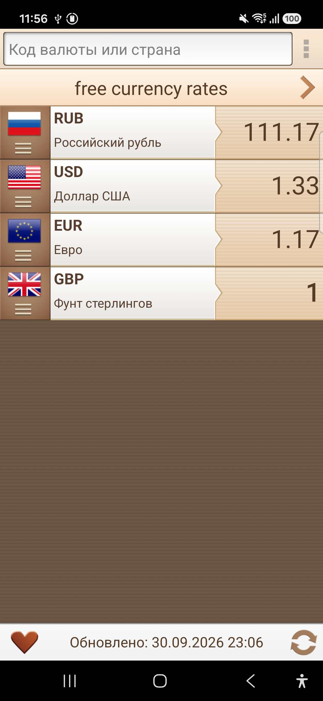
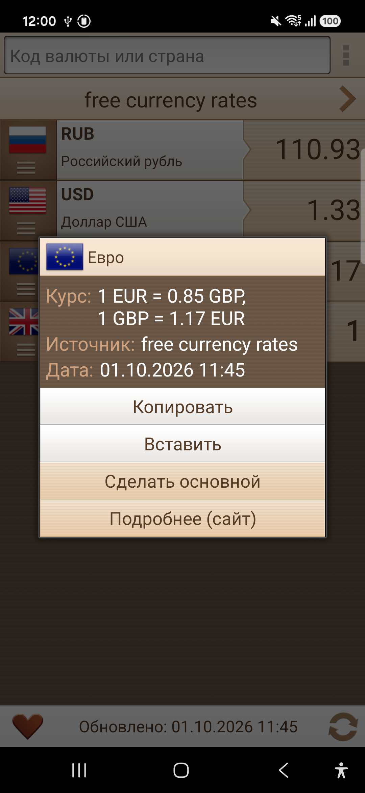
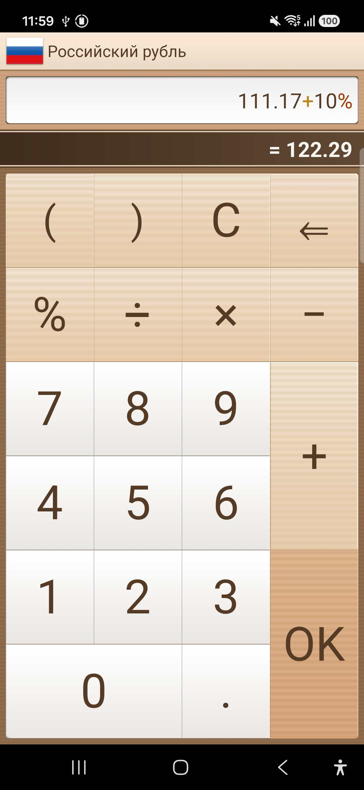
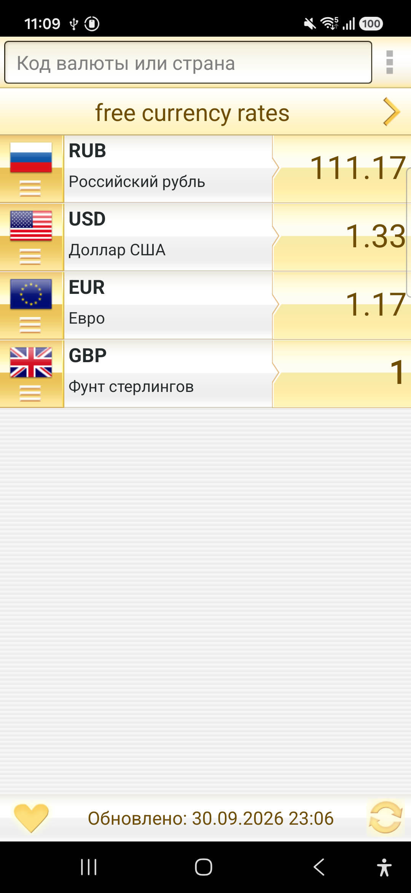

ℹ️ Для участия в тестировании ваш Google-аккаунт должен быть добавлен в список тестировщиков в Play Console.




Курсы Валют: Офлайн Конвертер — это стильный, гибкий и легкий инструмент для отслеживания мировых валют, созданный для работы даже там, где нет интернета. Контролируйте несколько валют одновременно на одном экране, считайте сложные выражения и настраивайте интерфейс под свой вкус.
Отслеживайте любые денежные единицы мира. Находите и добавляйте нужные валюты за секунды благодаря умному поиску:
Обновляйте курсы только тогда, когда есть доступ к сети.
Мы не навязываем вам один курс. Выбирайте, чьим данным доверять. Все актуальные котировки загружаются через
надежную платформу freecurrencyrates.com, позволяя вам переключаться между официальными курсами
ведущих мировых регуляторов:
Вводите значения и считайте прямо внутри приложения:
Настройте главный экран так, как удобно именно вам. Выводите и просматривайте только те валюты, которые необходимы вам в данный момент, и столько, сколько вам требуется:
Мы вышли за рамки скучных стандартных системных интерфейсов. Исследуйте уникальные, сочные и глубокие цветовые палитры встроенных тем.